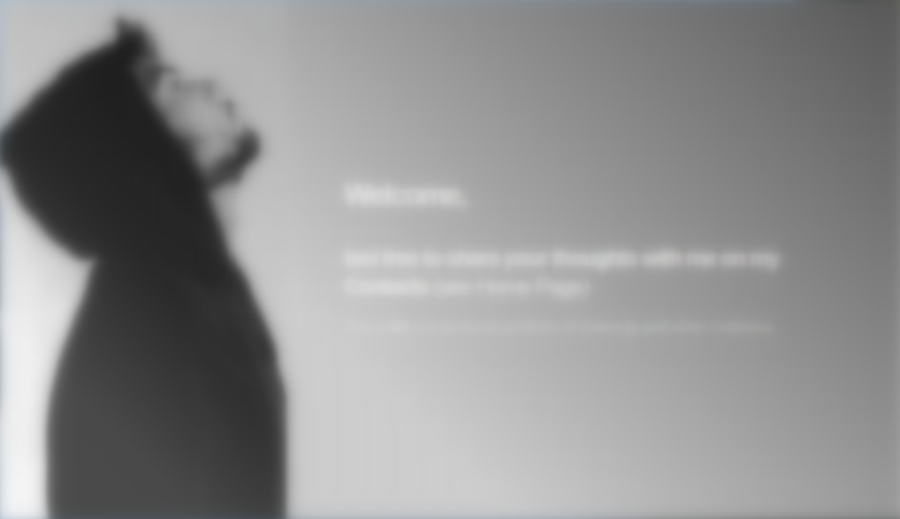

Ingegnere informatico appassionato di sicurezza, arte e tecnologia.
- Diplomato al liceo scientifico (2017)
- Laurea triennale e magistrale in ingegneria informatica
- Esperienza lavorativa nella sicurezza informatica dal 2022
- Appassionato di tiro con l'arco, videogiochi, giochi da tavolo, cinema e musica synthwave
Sono sempre curioso di imparare e aperto a nuove sfide.
Contattami per collaborazioni o semplicemente per fare due chiacchiere!
Sicurezza Informatica
Programmazione
Grafica Digitale
Teamwork
Le mie passioni

I miei Disegni
Arte. Una cornice contenente i miei disegni digitali e cartacei più recenti.
I miei Spazi
Posti. Un acquario immerso nei miei luoghi preferiti.